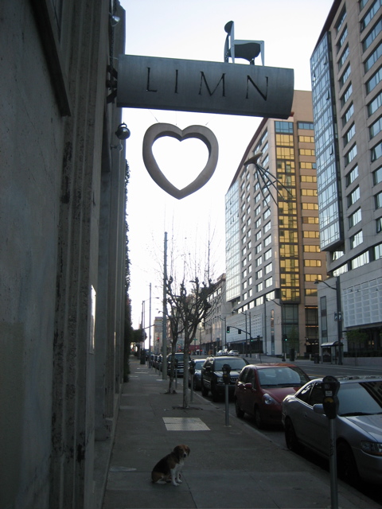

<--Previous Up

Return to Limn
When we worked in this neighborhood a couple of years ago Limn's signboard was a huge heart that seemed to be made of lead. Just below the bottom of the photo is a circular hole that must have been punched into the sidewalk when the old heart fell. After a couple of months with nothing but miscellaneous furniture hanging from their name, Limn have finally installed a new, lighter heart.